USB 基础
USB 基本概念
USB 协议标准
| USB 协议标准 | 主要特点 | 速度等级 |
|---|---|---|
| USB 2.0 Full Speed （旧称 USB 1.1） | 规范了 USB 低全速传输 | 1.5 Mbps~12 Mbps |
| USB 2.0 High Speed （旧称 USB 2.0） | 规范了 USB 高速传输 | 480 Mbps |
| USB 3.2 gen1 （旧称 USB 3.0） | 采用 8b/10b 编码，增加一对超高速差分线，供电 5V/0.9A | 5 Gbps |
| USB 3.2 gen2 （旧称 USB 3.1） | 采用 128b/132b 编码，速度提高 1 倍，供电 20V/5A，同时增加了 A/V 影音传输标准 | 10 Gbps |
| USB 3.2 gen2*2 （旧称 USB 3.2） | 增加一对超高速传输通道，速度再次翻倍，只能在 C 型接口上运行 | 20 Gbps |
通讯接口
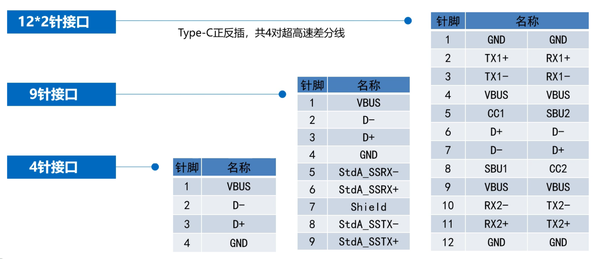
编码方式
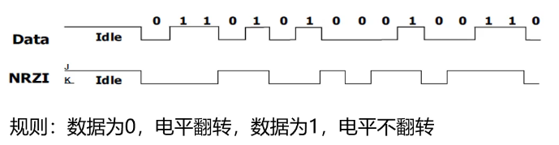
这种编码方式也称为反向不归零编码（NRZI）
位填充：在数据进行 NRZI 编码前，每 6 个连续的 1 信号之后都会插入 1 个 0 信号，以避免长时间电平保持不变带来的同步漂移。
信号传输状态
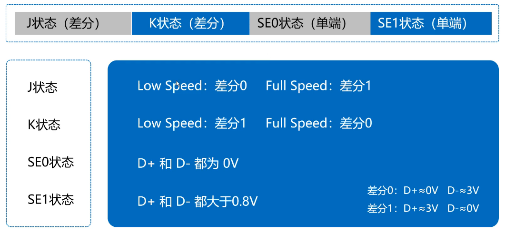
帧
帧是一个时间单位，固定为1ms（低/全速），高速-微帧为 125us
通讯过程划分
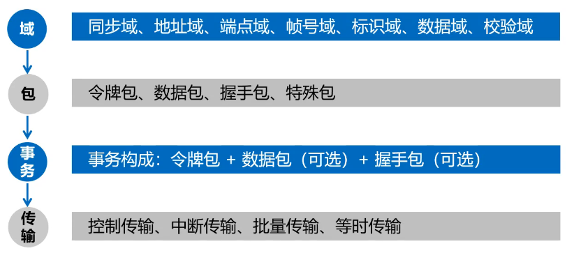
事务是最基本的传输单位。
四种传输
::: tip 控制传输 主机获取设备信息、状态，选择设备配置等一系列命令式工作。 :::
::: tip 中断传输
收发数据量少、周期性传输。
:::
::: tip 批量传输
利用任何可获得的总线带宽进行数据传输。
:::
::: tip 等时传输
恒定速率、没有差错控制的传输。
:::
其他术语
上传/下传
USB 主机接收 USB 设备的数据称为上传，USB 主机发送数据给 USB 设备称为下传。
地址
主机管理设备，而为每一个连接的设备分配一个地址，主机最多可以分配 127 个地址。
端点
USB 设备中实际的物理单元，端点和地址决定了主机和设备之间通讯的物理通道。
USB 传输特点
物理传输双方角色一定是主机和设备，一问一答传输方式，永远是主机先发起包请求。
主设备和从设备
主设备
- 检测 USB 设备的插拔动作
- 管理主从通讯之间的控制流
- 管理主从通讯之间的数据流
- 记录主机状态和设备动作信息
- 控制主控制器和 USB 设备间的电气接口
集线器
- 扩展 USB 主机和 USB 端口
- 结构上有一个上行端口，多个下行端口
- 支持级联，系统中最多 5 个集线器（不包括主机的根集线器）
- 支持速度切换
功能设备
- 一个独立的外围设备，可以是单一功能，也可以是多功能的合成设备
- 内部包含有描述自身功能和资源需求的配置信息

USB 系统分层
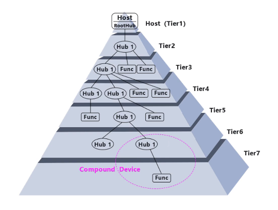
连接与检测
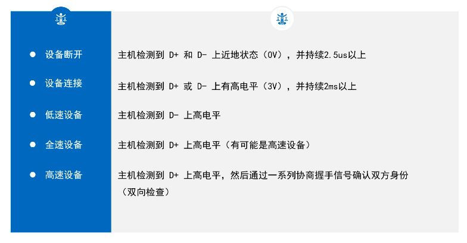
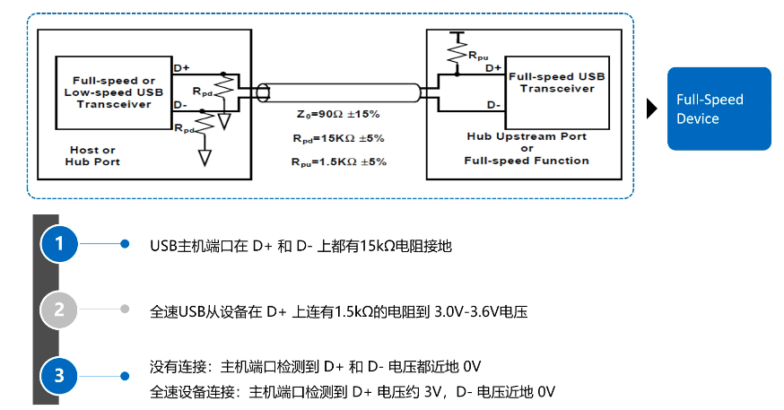
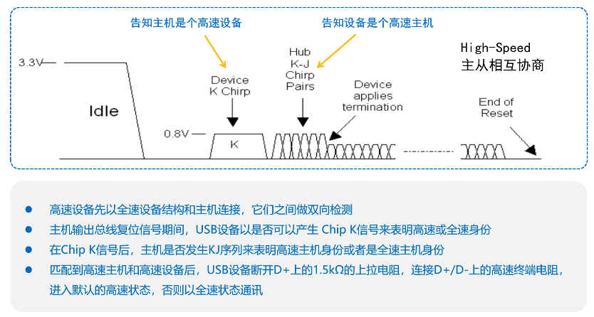
总线的状态
| 常见的总线状态 | 描述 |
|---|---|
| 正常工作 | 总线上存在周期性 SOF 包 |
| 总线复位 | 总线维持 SE0 状态 > 10ms |
| 总线挂起 | 总线无活动 > 3ms |
| 常见的几种变化 | 触发点 |
|---|---|
| 无连接 -> 连接 | D+/D- 上出现高电平 > 2ms |
| 正常 -> 挂起 | J 状态保持 > 3ms |
| 挂起 -> 正常（唤醒） | 出现 K 状态信号并持续一段时间 |
枚举
:::tip 枚举的定义
USB 主设备向 USB 从设备通过获取各种描述符，从而了解设备属性，知道是什么样的设备，并加载对应的 USB 类、功能驱动程序，然后进行后续一系列的数据通信。
:::
- 主设备连接识别从设备必须的过程
- 由多个控制传输构成
- 经过地址0 （缺省地址）到其他地址（主设备分配地址）的通讯
- 对于挂载多个 USB 从设备的系统，主设备是逐一进行枚举操作
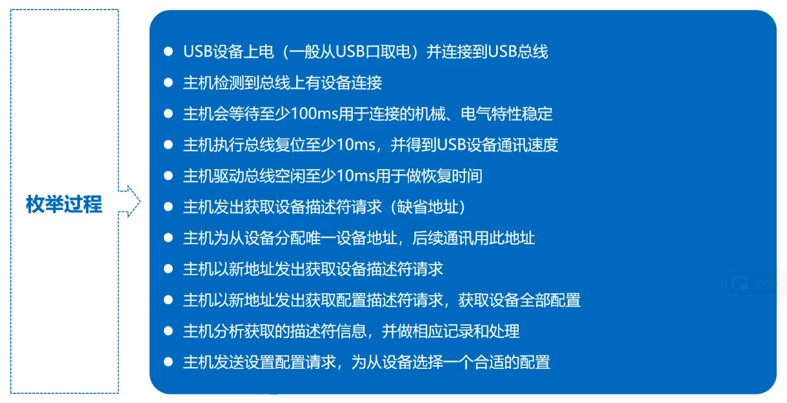
设备描述符
第一个需要获取的描述符，长度固定 18 字节。
配置描述符
描述了设备特定的配置，提供了当前配置下设备的功能接口，供电方式，耗电等信息。是一个配置的集合，集合长度不固定，包含了配置描述符、接口描述符、类定义描述符、端点描述符。
控制传输
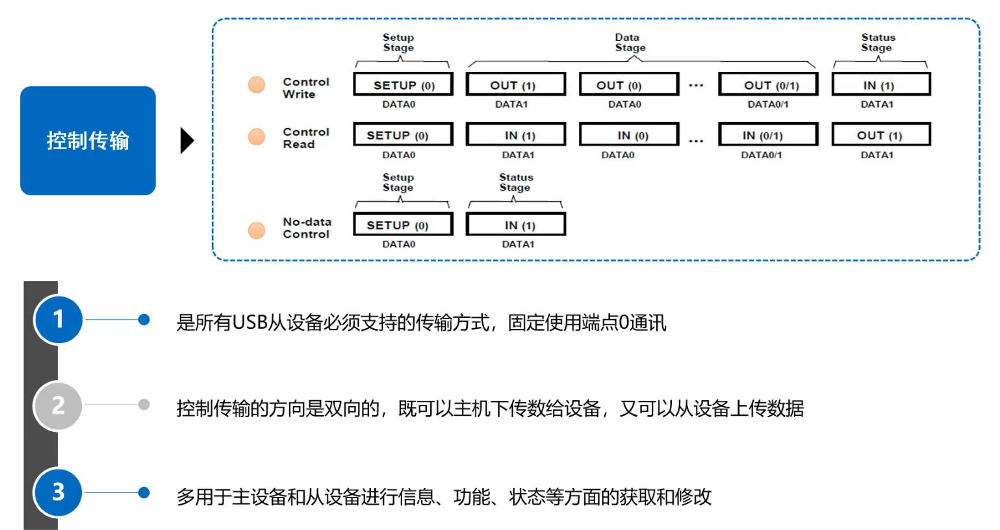
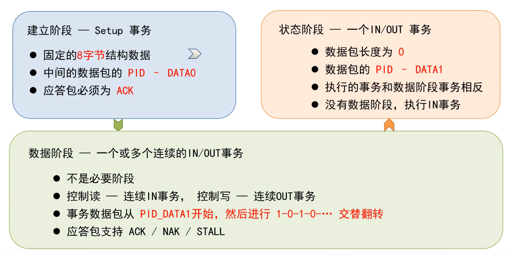
建立阶段
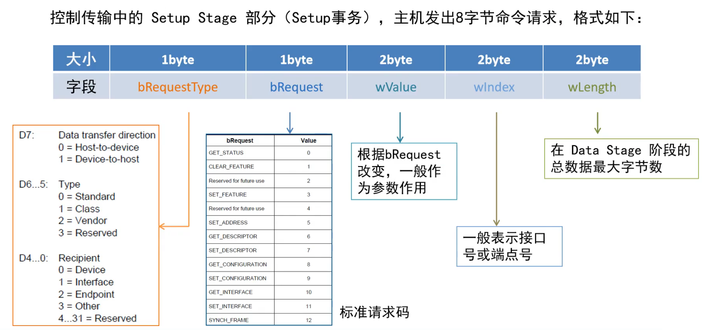
USB 键盘
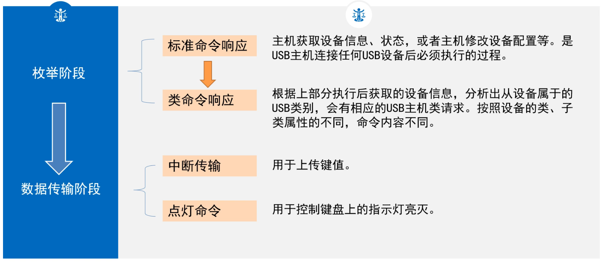